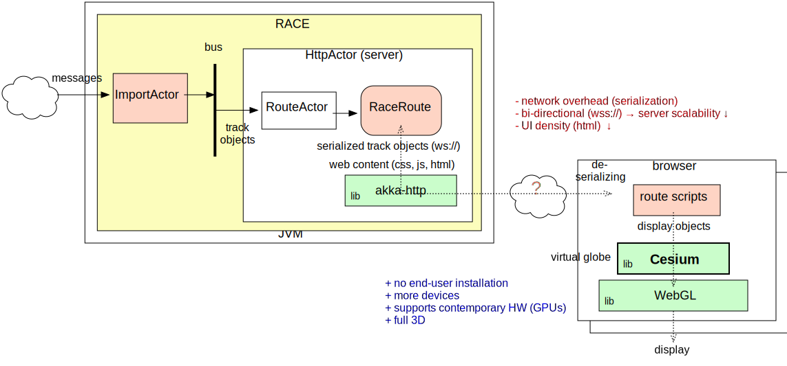

Browser: race-net-http
- ✓ no end-user install, more devices (RACE used as web server)
- ✓ 3rd party libs future proof (akka-http, Cesium), good HW support, full 3D (meshes)
- ⚠ requires network IO plus serialization/deserialization per app object update
- ⚠ less interaction (server scalability), UI density

1: ./race --vault ../conf -Darchive=../data/all-080717-1744/sbs.txt.gz config/net/cesium-track-server.conf